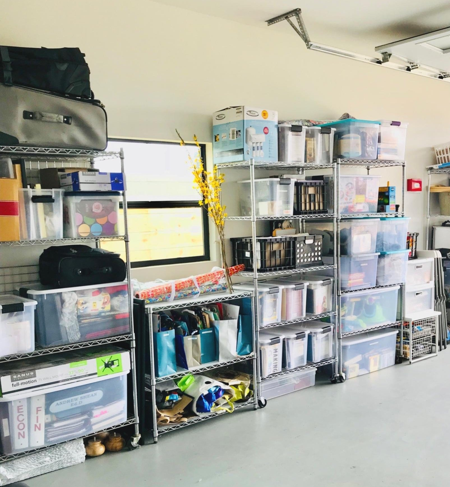
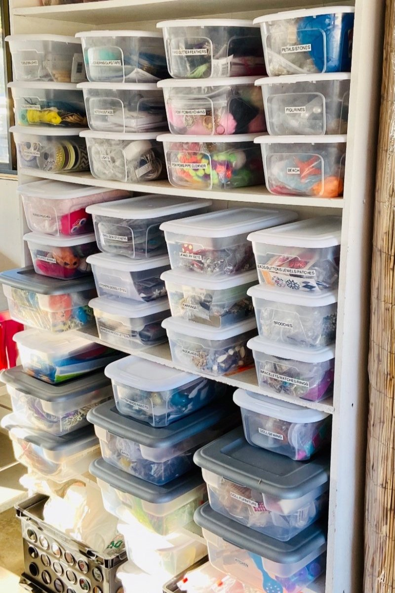

Benefits of an Organized Garage: Transforming Chaos into Efficiency
The garage is often a space that accumulates clutter, becoming a dumping ground for miscellaneous items, seasonal gear, and forgotten projects. However, transforming your garage into an organized and efficient space can yield numerous benefits beyond just reclaiming square footage. In this article, we will explore the advantages of an organized garage and how it can enhance your daily life.
Maximizes Storage Space: An organized garage allows you to maximize the available storage space effectively. By implementing smart storage solutions such as shelves, cabinets, and pegboards, you can create designated areas for different items. Utilize vertical space by installing overhead storage racks or utilizing wall-mounted hooks. We have worked with Garage Excelland they have amazing storage solution options for any size and budget. When everything has its place, you can easily find what you need, freeing up valuable space and preventing clutter from accumulating. Consider investing in storage systems specifically designed for garages, such as modular shelving units or stackable bins, to optimize storage capacity.

Enhances Safety: An organized garage promotes a safer environment for you and your family. Removing clutter and tripping hazards reduces the risk of accidents. Ensure that walkways and pathways are clear to prevent injuries. Store hazardous materials, such as chemicals and power tools, in secure cabinets or locked areas, away from children and pets. Consider installing adequate lighting to improve visibility in your garage. Properly organize your garage with safety in mind, and you can enjoy peace of mind knowing that potential risks have been minimized.
Saves Time and Reduces Stress: Have you ever spent hours searching for a specific tool or item buried beneath piles of clutter in your garage? An organized garage saves you valuable time and minimizes stress by providing easy access to your belongings. With everything properly labeled and stored, you can quickly locate what you need, whether it's gardening tools, sporting equipment, or holiday decorations. Eliminating the frustration of a disorganized space allows you to focus on the task at hand and complete projects more efficiently. Imagine the time and energy you will save by having a streamlined and clutter-free garage. Check out “Our Process” page and learn how we can help you get your garage organized.

Boosts Productivity and Creativity: A well-organized garage creates an ideal space for pursuing hobbies, DIY projects, and creative endeavors. When tools, materials, and equipment are easily accessible, you're more likely to engage in these activities. Our team has worked in many garage spaces and work very closely with our clients to create their dream space. An organized workspace inspires creativity and enables you to complete projects efficiently. Whether it's woodworking, car maintenance, or crafting, an organized garage allows you to enjoy your hobbies to the fullest and pursue your passions with ease. Imagine the satisfaction of having a designated area where you can immerse yourself in your favorite projects and hobbies.
Protects Your Valuables: Proper organization helps protect your valuable possessions from damage. By storing items in designated areas, you reduce the risk of them getting damaged due to improper storage or accidental mishaps. For example, fragile items like glassware or electronics can be safely stored in labeled bins or on sturdy shelves, away from potential hazards. Additionally, keeping your garage clean and organized can prevent pests or moisture-related issues that could cause damage to your belongings. Invest in storage solutions that offer protection and ensure that your valuables remain in excellent condition.
An organized garage is more than just a tidy space—it offers a multitude of benefits that positively impact your daily life. From maximizing storage space and saving time to protecting your valuables and enhancing safety, an organized garage transforms chaos into efficiency. Invest the time to declutter, implement smart storage solutions, and create a system that works for you. By transforming your garage into an organized and functional space, you'll enjoy the convenience, productivity, and peace of mind that comes with it. Say goodbye to the stress and frustration of a cluttered garage and embrace the benefits of an organized and efficient space.
Schedule my free consultation